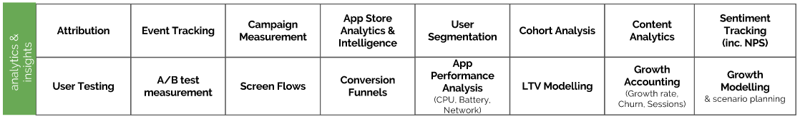
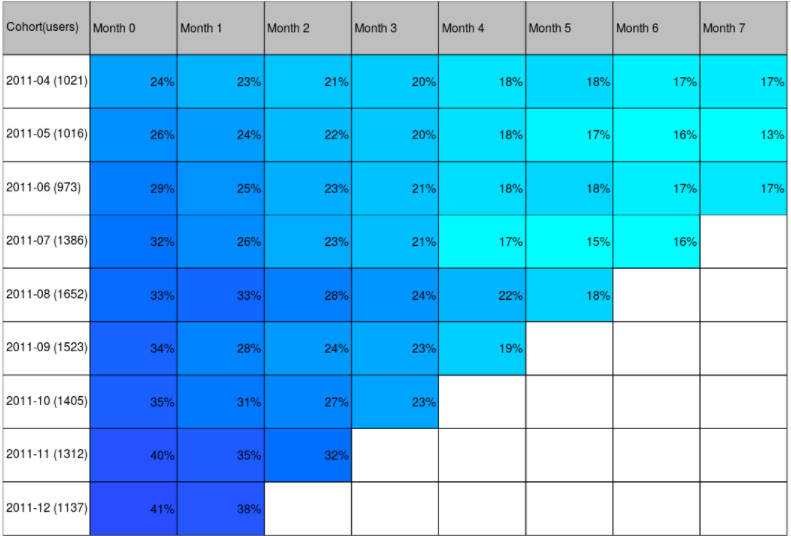
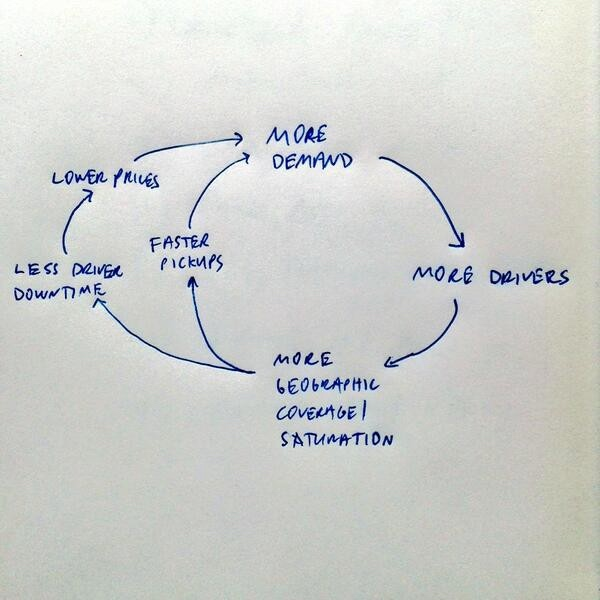
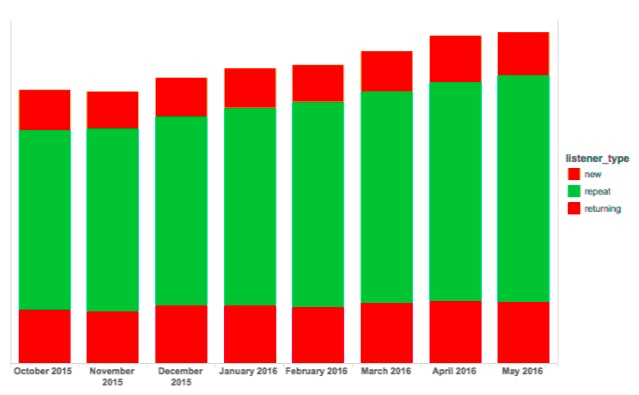
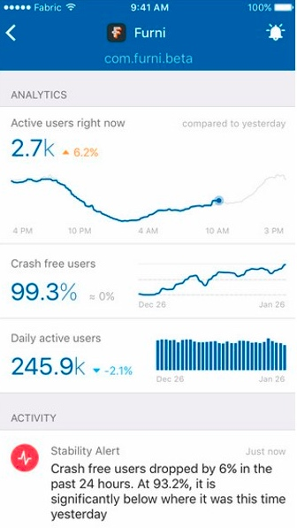

洞察分析层是堆栈中最全面的层，其基础是定量和定性数据、指标、建模和衡量影响和识别机会方面的重要性的报表。 尽管可以通过足够的投资来制作自定义解决方案或快速黑客或数据库查询以获得短期洞察力，市面上还是存在许多工具和服务来帮助这一层中的特定数据收集或处理活动。
归因(Attribution)
app 的安装归因于特定营销活动，内容分享归因于社交网络，邀请或者其他的获取源在网络上有不同的追踪技术。浏览器cookie可以在移动/响应式网站上使用，但对于本机应用程序，用户可以使用特定于设备的ID（如IDFA或Android ID），或通过不完美的指纹识别技术，这些技术结合了大量数据输入以匹配用户（或 ，更准确地说，一个设备）点击安装。 在考虑多个接触点和跨平台流量（例如，桌面Web到移动设备安装）时，归因变得更具挑战性。
Deeplinks
本地移动应用程序正在发展;它们不再仅仅从手机的主屏幕上启动，而是越来越多地从深度链接上启动，用户可以直接访问应用程序中的特定内容(假设他们已经安装了)。许多移动应用程序都实现了deeplink模式，为应用程序提供了额外的入口点。Deeplinks可以包含在推送通知、电子邮件、消息、其他应用程序、来自网站的链接以及几乎任何可以启动常规web URL的地方。不仅如此，应用程序中的内容可以通过谷歌进行索引，并出现在搜索结果中(iOS 9和更高版本中，如果启用了通用链接，也支持应用程序索引)。深度链接也用于重新定位广告活动，即现有(但可能已失效)用户在其他应用程序中接受广告，目的是重新吸引他们，并将他们带回应用程序的特定部分。
如果你的应用程序支持深度链接内容，那么收集这些链接的表现是很重要的。了解哪个深度链接uri正在被打开，以及理想情况下用户来自哪里(例如浏览器链接、推送通知、重定向活动等)，将提供有价值的洞察哪些内容是最受欢迎的，以及更深入地了解各种渠道和活动是如何重新吸引现有用户的。这些数据可以为新的内容的编辑政策提供信息，并帮助优化通讯活动。
事件追踪(Event Tracking)
在粒度级别衡量用户参与度是进行数据驱动的优化以及评估功能的采用和性能的关键先决条件。
用户在应用程序中执行的任何操作（应用程序打开，帐户注册，屏幕之间的导航，按钮按下，内容共享，购买等），以及以编程方式在应用程序内发生的事情（例如，敌方太空船被摧毁，级别 已完成，帐户成功创建等）是作为分析实施的一部分跟踪作为“事件”的候选者。 当网络条件允许时，分析SDK通常会将这些事件以及与此事件发生相关的任何其他元数据（通常称为“事件属性”）传输到服务器。
为了在基于web的仪表板中进行分析，聚合和存储事件数据服务器端是目前常见的做法，许多分析工具都可以简化这一任务。这样的定量事件数据显示了用户如何与应用/游戏进行交互，而应用/游戏的特性是最常用/最不常用的，它可以帮助识别bug(例如，如果事件数量突然骤减，与事件相关的特性可能会被破坏)，并允许对关键用户路径的参与漏斗进行可视化。此外，服务器生成的营销活动或活动通知可以由事件触发，并可能使用事件属性数据进行个性化处理。
活动测量(Campaign Measurement)
市场营销活动，无论是为了获得用户、参与/保留或盈利，都需要适当的度量，以便度量影响/ROI。没有对广告活动和创意/文案表现的定量了解，广告预算就无法合理分配或调整规模，也就无法优化广告活动。
对于用户获取（UA）或重定向广告系列，此主题与安装/深层链接归因和事件跟踪密切相关; 营销人员需要了解每个网络和广告系列变体提供的安装量，获取这些新用户的费用以及这些用户的“质量”（通常根据群组生成的参与度/留存或付费事件来衡量） （归因于广告系列的用户），以优化广告支出以提高效果。
电子邮件，推送和应用内广告系列等生命周期营销也需要进行详细衡量，以便运行实验以提高开放和点击率以及下游性能目标，例如增加应用内购买，推动应用内更多关键操作，改进 留存等
应用商店分析与智能(App Store Analytics & Intelligence)
任何应用发布商都将通过至少一个（可能是几个）应用商店分发他们的应用;除iTunes App Store和Google Play外，还有许多其他分销渠道，包括Windows Store，Amazon App Store，Samsung Apps，Myapp（腾讯）等。
如果使用提供这些数据的服务，基本App Store Analytics可按国家/地区，设备，操作系统版本等以及竞争对手的应用安装和应用内购买进行衡量和报告。
随着每天都有数以千计的新应用和游戏提交到应用商店，在商店中保持可见性对于应用发布商来说是一场持续的战斗。观察竞争趋势并对其做出反应，关键字搜索量和其他市场情报可以使发布商在竞争中占据优势。查看某类别中顶级应用程序的预测下载数据可以为战略规划提供信息，并提供发布商为了达到商店中特定排名而需要达到的每日下载量的指示（尽管通用下载估算 - 使用预测方法生成 - 应谨慎对待，因为类别和分析工具之间的准确性差异很大）。尽管如此，分析应用商店数据以期获得可操作的洞察力可能对产品生命周期的所有阶段都有所帮助。
App Store搜索也是应用程序发现的重要组成部分，对关键字进行仔细识别和测试可以增加商店的有机下载量。存在许多ASO工具，其估计关键字搜索量并估计在搜索特定关键字时高度排名的难度。
用户细分(User Segmentation)
并非所有用户都是相同的; 一些人群将更加投入，更有可能在应用程序中花钱，或者显示一些共同特征，使他们能够被分组到有意义的部分，以便进行分析，营销，动态定价等等。 大多数分析工具允许基于用户元数据（a.k.a属性）或应用程序内的行为创建和跟踪动态更新的用户细分。 通过针对特定用户细分定制应用内和外部消息传递活动，营销人员可以提高其广告系列的相关性和影响力并带来更多影响。
队列分析(Cohort Analysis)
为了了解用户增长和留存如何随着时间的推移而发展，重要的是检查同类群组中的用户（具有一些共同特征的用户组，通常是安装/注册日期），而不是依赖于总体注册等顶级指标 用户，每月活动用户（MAU）和每日活动用户（DAU），这些用户往往会掩盖潜在的保留问题。
典型的群组保留表将用户划分为在应用中首次出现的时段（通常是日/周/月），并显示在以下时段中返回到应用的用户数（或群组的百分比）。

内容分析(Content Analytics)
如果应用或游戏包含动态内容，例如 新闻文章，食谱，照片，音乐曲目等随后跟踪内容（观看，喜欢，书签，购买等）和内容共享，可以深入了解哪些内容和类别可以提供最佳ROI。 除了跟踪内容参与之外，还期望测量特定内容项由于被共享而产生的推荐用户的数量以及哪些频道提供最佳的病毒性。
情绪追踪(Sentiment Tracking)
客户满意度很重要;不满或心怀不满的用户面临流失的高风险，并且可能会在应用商店或在线论坛上发出负面反馈，从而阻止潜在用户。相反，快乐或高兴的用户可以成为移动产品的强大拥护者，并且应该在用户细分中进行识别。
衡量客户满意度的方法有很多种;在线，应用内或电子邮件调查可用于收集详细的反馈，但更常见的是，用户只需通过弹出窗口向应用程序提供0到5星的评分，或者提供他们的净推荐分数（NPS） ）评分简单，标准化的问题“你有多大可能推荐[产品]给同事的朋友？”（评分为0-10）。
为应用程序评分较高的用户可以自信地定位，以便对商店中的应用进行评级，邀请朋友，分享内容或发布有关应用的推文。具有负面情绪的用户可以被识别并且 - 希望 - 通过客户服务工作来安抚，并鼓励他们直接向出版商而不是公众提供反馈。
在推广到100％的用户群之前,情感跟踪技术可用于定量评估用户对新功能或内容的反应.
屏幕流跟(Screen Flows)
与事件跟踪类似，屏幕流跟踪可以深入了解用户如何浏览应用，他们登陆的屏幕以及他们到达那里的路径。 对屏幕流程的分析可以识别未充分利用的屏幕或功能，这些屏幕或功能可能会受益于UI中更突出（或完全切断），或者表明用户在应用程序的意外部分花费了大量时间。
转换渠道(Conversion Funnels)
跟踪和可视化关键参与流程中的每个事件，例如帐户创建，购买，搜索等，有助于识别表现不佳的流程，并通过显示用户在每个阶段中的落差来指导优化工作。
在大多数分析套件中，可以临时创建新的渠道，因此可以轻松创建新的渠道来监控新功能或购买选项的性能。 详细的事件跟踪是漏斗可视化的先决条件。
结算和收入报告(Billing And Revenue Reporting)
一些移动应用程序或平台运营市场，供应商和消费者可以在那里交易虚拟或现实世界的商品或服务。在其他情况下，应用程序内的内容可能以按播放付费或按观看付费的方式从供应商获得许可。
如果上述任何一项都适用，准确(最好是自动化)的记录和报告支出、许可费、版税或广告收入、应用内购买或订阅收入是产品分析和报告框架的必要组成部分。
增长模型（Growth Modelling）
增长是一个系统，有许多输入和反馈循环。 在组织内部建立共享理解 - 引导到抽象模型 - 激发增长努力，为假设生成和构思过程提供信息。 随着时间的推移，增长模型可能会得到改进，因为这种共享理解是通过实验学习和对用户行为，市场动态和运营数据的更深入理解而发展的。

Uber’s growth model. (Src = http://andrewchen.co/ubers-virtuous-cycle-5-important-reads-about-uber/)
除了开发如上所述的高级定性模型之外，连接采集（按各种采集渠道和病毒循环细分）和留存/流失的电子表格或类似定量模型将证明非常有价值，无论是为了理解 为不同的场景提供和创建预测。 通过这种模型，可以实现场景规划，团队可以根据对活跃用户增长产生最大影响的内容来调整获客和留存工作的组合。
LTV 模型 (LTV Modeling)
一旦应用程序可以变现，了解用户的生命周期价值（LTV）就非常重要。 LTV是用户在其生命周期内产生的未来预期收入的现值计算。 由于这是一个前向投影，LTV建模并不是一门精确的科学; 用户产生的实际收入可能超过或低于LTV计算，因此在使用LTV进行广告购买决策时保证是保守的。 LTV可能受到许多因素的影响，包括采购来源，用户人口统计，产品内的货币化可能性范围等。如果用户保留（寿命）可以增加，那么LTV也会更高。
growth 计算(Growth Accounting)
虽然定量增长模型用于生成前瞻性预测，但增长计算过程涉及跟踪当前和历史用户增长。主动用户增长可以看作是一个简单的函数:
活跃用户=新用户+保留用户 - 流失用户（在给定时间段内，例如最近30天）
（注意：'失效'的用户可能更正确，因为他们可能没有完全被搅动，因为他们永远不会返回，而只是他们在这段时间内没有活跃）。
另一种思考方式是，增长来自三个独立的“桶”用户：新用户，重复用户和回头客。 重复用户是那些在上一期间活跃并且在此期间再次被看到的用户。 返回的用户在前一段时间内被重新激活。 跟踪这三个存储桶中的活跃用户可以更深入地了解活动用户数以及在给定时间段内驱动增长（或缺乏增长）的因素。

App性能分析(CPU、电池、网络、崩溃等) (App Performance Analysis (CPU, Battery, Network, Crashes Etc))
移动产品与桌面应用和网站的不同之处在于可以访问它们的各种环境。在桌面环境中，Web应用程序可以安全地假设未经计量的Internet连接（可能具有良好的带宽和延迟）始终可用。良好的移动产品设计用于带宽有限，延迟较高或无网络连接的情况。移动设备依靠电池运行，用户越来越精明，因此可能会删除电池占用应用程序。同样，许多用户没有无限的数据计划，并期望应用和移动网站具有数据意识。最后，崩溃的应用程序会迅速卸载，通常在应用商店中留下较差的评论。
虽然性能分析可能主要由工程团队考虑，但值得记住的是，在上述任何情况下表现不佳的产品可能会遭受高流失和/或减少参与度。关注绩效指标将提醒团队任何潜在的增长抑制因素。

上图:Fabric monitor应用程序，包含崩溃报告。